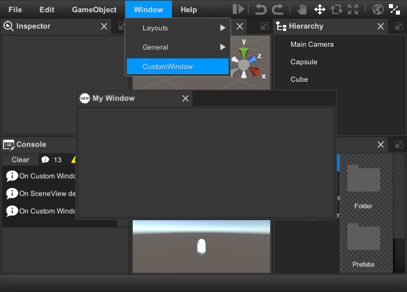

Runtime Editor Docs
Overview
Runtime Editor is the set of scripts and prefabs which help you to create scene editor, game level editor or build your own modeling application. It supports drag & drop, undo & redo and selection api. To implement user interface and core functions runtime editor use transform-handles, gizmos, save load subsystem and three controls: menu, virtualizing tree view and dock panels. Out of the box it has six Views:
- Scene View to manipulate objects in the scene.
- Hierarchy View for displaying and manipulating the object tree.
- Project View to manage assets and scenes.
- Inspector View to display and edit object properties.
- Console View to display information, warnings and errors.
- Game View for the game.
- Add More...
The Runtime Editor has many ready-to-use property and component editors and it is relatively easy to create new ones. "Add Component" drop-down button allows you to add components at runtime. There are also several important dialogs included:
- Save Scene Dialog.
- Object Picker.
- Color Picker.
- Asset Bundles and Libraries Importer.
- Manage Projects Dialog.

Getting Started
To get started with Runtime Editor do following:
- Create new scene and save it.
-
Click Tools->Runtime Editor->Create

-
Add Battlehub/RTEditor/Scripts/Game View Camera component to Main Camera

-
Create several Game Objects and add Expose To Editor component.

-
Click Tools->Runtime SaveLoad->Build All

-
Hit Play

Few more steps:
- Create Asset Library
-
Launch runtime editor and click File->Import Assets.

-
Select the built-in asset library created in step 1.

-
Import assets.

-
You will see the imported assets in the project window.

Note
Demo scene can be found in Assets/Battlehub/RTEditor/Demo
Main & Context Menu
Runtime Editor use Menu control to implement main and context-menu. To extend main menu create static class with [MenuDefinition] attribute and add static methods with [MenuCommand] attribute.
using Battlehub.RTCommon;
using Battlehub.RTEditor;
using Battlehub.UIControls.MenuControl;
using UnityEngine;
[MenuDefinition]
public static class MyMenu
{
/// add new command to exising menu
[MenuCommand("MenuWindow/Create My Window")]
public static void CreateMyWindow()
{
Debug.Log("Create My Window");
}
/// add new command to new menu
[MenuCommand("My Menu/My Submenu/My Command")]
public static void CreateMyMenu()
{
Debug.Log("Create My Menu");
}
/// disable menu item
[MenuCommand("My Menu/My Submenu/My Command", validate: true)]
public static bool ValidateMyCommand()
{
Debug.Log("Disable My Command");
return false;
}
/// replace existing menu item
[MenuCommand("MenuFile/Close")]
public static void Close()
{
Debug.Log("Intercepted");
IRuntimeEditor rte = IOC.Resolve<IRuntimeEditor>();
rte.Close();
}
/// Hide existing menu item
[MenuCommand("MenuHelp/About RTE", hide: true)]
public static void HideAbout() { }
}

To open context menu with custom commands do following:
using Battlehub.RTCommon;
using Battlehub.RTEditor;
using Battlehub.UIControls.MenuControl;
using UnityEngine;
public static class MyContextMenu
{
public static void OpenContextMenu()
{
IContextMenu contextMenu = IOC.Resolve<IContextMenu>();
MenuItemInfo cmd1 = new MenuItemInfo { Path = "My Command 1" };
cmd1.Action = new MenuItemEvent();
cmd1.Action.AddListener((args) =>
{
Debug.Log("Run My Command1");
IRuntimeEditor editor = IOC.Resolve<IRuntimeEditor>();
Debug.Log(editor.Selection.activeGameObject);
});
MenuItemInfo cmd2 = new MenuItemInfo { Path = "My Command 2" };
cmd2.Validate = new MenuItemValidationEvent();
cmd2.Action = new MenuItemEvent();
cmd2.Validate.AddListener((args) =>
{
args.IsValid = false;
});
cmd2.Action.AddListener((args) =>
{
Debug.Log("Run My Command2");
});
contextMenu.Open(new[]
{
cmd1, cmd2
});
}
}

Built-in context menu populated and opened from Assets/Battlehub/RTEditor/Scripts/ProjectFolderView.cs and ProjectTreeView.cs

RTEDeps
The main purpose of the Assets/Battlehub/RTEditor/RTEDeps.cs class is to register various services into IOC:
- IResourcePreviewUtility - create preview for Game Object or asset.
- IWindowManager - manage build-in and custom windows.
- IContextMenu - create and show context menu.
- IRuntimeConsole - log messages cache.
- IRuntimeEditor - the main interface of the RuntimeEditor.
IRuntimeEditor
IRuntimeEditor inherits the IRTE interface and adds several important methods and events.
using Battlehub.RTCommon;
using Battlehub.RTEditor;
using UnityEngine;
public class GetRuntimeEditor : MonoBehaviour
{
void Start()
{
IRuntimeEditor editor = IOC.Resolve<IRuntimeEditor>();
}
}
Events:
event RTEEvent SceneLoading- fired before loading the scene.event RTEEvent SceneLoaded- fired after loading the scene.event RTEEvent SceneSaving- fired before saving the scene.event RTEEvent SceneSaved- fired before saving the scene.
Methods:
void NewScene(bool confirm = true)- create a new scene (show the confirmation dialog by default).-
void SaveScene()- save the current scene. If the scene is new, the save scene dialog will appear. -
void CreateWindow(string window)- call corresponding method of window manager. -
void CreateOrActivateWindow(string window)- this method creates a window only if it does not exist. -
ProjectAsyncOperation<AssetItem[]> CreatePrefab(ProjectItem folder, ExposeToEditor obj, bool? includeDeps = null)- create prefab with preview. ProjectAsyncOperation<AssetItem> SaveAsset(UnityObject obj)- save asset.ProjectAsyncOperation<ProjectItem[]> DeleteAssets(ProjectItem[] projectItems)- delete assets.ProjectAsyncOperation<AssetItem> UpdatePreview(UnityObject obj)- update asset preview.
Example:
using Battlehub.RTCommon;
using Battlehub.RTEditor;
using Battlehub.RTSL.Interface;
using System.Collections;
using UnityEngine;
public class IRuntimeEditorMethodsUsageExample : MonoBehaviour
{
IEnumerator Start()
{
//Get runtime editor
IRuntimeEditor editor = IOC.Resolve<IRuntimeEditor>();
//Use IProject interface if editor is not opened or does not exist.
//See save-load/#project for details
Debug.Assert(editor.IsOpened);
//Create Prefabs folder
IProject project = IOC.Resolve<IProject>();
yield return project.CreateFolder("Prefabs");
ProjectItem folder = project.GetFolder("Prefabs");
//Create new object and hide it from hierarchy
GameObject go = GameObject.CreatePrimitive(PrimitiveType.Sphere);
go.hideFlags = HideFlags.HideAndDontSave;
go.SetActive(false);
//Create prefab with preview and destroy source object
yield return editor.CreatePrefab(folder, go.AddComponent<ExposeToEditor>(), true);
Destroy(go);
//Load prefab
ProjectAsyncOperation<Object[]> load = project.Load<GameObject>("Prefabs/Sphere");
yield return load;
GameObject loadedGO = load.Result[0] as GameObject;
//... Make changes
//Update preview
yield return editor.UpdatePreview(loadedGO);
//Save changes
yield return editor.SaveAsset(loadedGO);
//Get corresponding project item
ProjectItem projectItem = project.Get<GameObject>("Prefabs/Sphere");
//Delete prefab and clear undo stack
yield return editor.DeleteAssets(new[] { projectItem });
}
}
Window Manager
Window Manager allows you to create complex windows, such as an inspector or scene, and simple dialogs, such as a message box or confirmation. The difference between dialog and window is rather subtle. The content of the dialog can be anything, and it can not be docked. To be considered as a window or dialog window, a Runtime Window component must be attached to the game object. When the runtime window is activated, the other windows are deactivated. The dialog cannot deactivate the window.
Note
Default windows and dialogs can be found in Assets/Battlehub/RTEditor/Prefabs
Note
Window Manager use dock panels control.
Get window manager:
using Battlehub.RTCommon;
using Battlehub.RTEditor;
using UnityEngine;
public class GetWindowManager : MonoBehaviour
{
void Start()
{
IWindowManager wm = IOC.Resolve<IWindowManager>();
}
}
Show message box:
wm.MessageBox("Header", "Text", (sender, args) =>
{
Debug.Log("OK Click");
});
Show confirmation:
wm.Confirmation("Header", "Text",
(sender, args) =>
{
Debug.Log("Yes click");
},
(sender, args) =>
{
Debug.Log("No click");
},
"Yes", "No");
Activate window:
wm.ActivateWindow(RuntimeWindowType.Scene.ToString());
Create window:
wm.CreateWindow(RuntimeWindowType.Scene.ToString());
Create dialog window:
IWindowManager wm = IOC.Resolve<IWindowManager>();
wm.CreateDialogWindow(RuntimeWindowType.Scene.ToString(), "Header",
(sender, args) => { Debug.Log("OK"); },
(sender, args) => { Debug.Log("Cancel"); });
Set default layout:
IWindowManager wm = IOC.Resolve<IWindowManager>();
wm.SetDefaultLayout();
How to: add custom window to Window Manager
Note
For information on how to create custom window please navigate to this -> this <- section
- Create class derived from Runtime Window
- Duplicate Assets/Battlehub/RTEditor/Prefabs/Views/Resources/TemplateWindow.prefab.
- Add CustomWindow component created in step 1.
-
Set
Window Typeto Custom.
-
Create Initialization script and add it to game object in the scene.
using Battlehub.RTCommon;
using Battlehub.RTEditor;
using Battlehub.UIControls.MenuControl;
using UnityEngine;
[MenuDefinition]
public class Initialization : MonoBehaviour
{
private IRuntimeEditor m_editor;
void Start()
{
m_editor = IOC.Resolve<IRuntimeEditor>();
m_editor.IsOpenedChanged += RegisterWindows;
RegisterWindows();
}
void OnDestroy()
{
if(m_editor != null)
{
m_editor.IsOpenedChanged -= RegisterWindows;
}
}
private void RegisterWindows()
{
if (!m_editor.IsOpened)
{
return;
}
IWindowManager wm = IOC.Resolve<IWindowManager>();
wm.RegisterWindow(new CustomWindowDescriptor
{
IsDialog = false,
TypeName = "MyWindow",
Descriptor = new WindowDescriptor
{
Header = "My Window",
MaxWindows = 1,
Icon = Resources.Load<Sprite>("IconNew"),
ContentPrefab = Resources.Load<GameObject>("CustomWindow")
}
});
}
[MenuCommand("MenuWindow/CustomWindow")]
public static void ShowCustomWindow()
{
IWindowManager wm = IOC.Resolve<IWindowManager>();
wm.CreateWindow("MyWindow");
}
}

Inspector View
The main purpose of the inspector is to create different editors depending on the type of selected object and its components. Here is a general idea of what is happening:
- The user selects a Game Object, and the inspector creates a GameObject editor.
- The game object editor creates component editors.
- Each component editor creates property editors.

Prefabs:
- InspectorView can be found in Assets/Battlehub/RTEditor/Prefabs folder,
- GameObject, Material and Component editors in Assets/Battlehub/RTEditor/Prefabs/Editors,
- Property editors in Assets/Battlehub/RTEditor/Prefabs/Editors/PropertyEditors.

How To: Configure Editors
To select the editors to be used by the inspector, click Tools->Runtime Editor->Configuration

There are five sections in configuration window:
- Object Editors - select which editor to use for Game Object.
- Property Editors - select which editors to use for component properties.
- Material Editors - select which editors to use for materials
- Standard Component Editors – select which editors to use for standard components.
- Script Editors – select which editors to use for scripts.
After you select and enable the desired component editors, click the Save Editors Map button

How To: Select Component Properties
In order to select the properties displayed by the component editor, you need to create a class and inherit it from ComponentDescriptorBase<
using UnityEngine;
using System.Reflection;
using Battlehub.Utils;
namespace Battlehub.RTEditor
{
public class TransformComponentDescriptor : ComponentDescriptorBase<Transform>
{
public override object CreateConverter(ComponentEditor editor)
{
TransformPropertyConverter converter = new TransformPropertyConverter();
converter.Component = (Transform)editor.Component;
return converter;
}
public override PropertyDescriptor[] GetProperties(ComponentEditor editor, object converterObj)
{
TransformPropertyConverter converter = (TransformPropertyConverter)converterObj;
MemberInfo position = Strong.PropertyInfo((Transform x) => x.position);
MemberInfo rotation = Strong.PropertyInfo((Transform x) => x.rotation);
MemberInfo rotationConverted = Strong.PropertyInfo((TransformPropertyConverter x) => x.Rotation);
MemberInfo scale = Strong.PropertyInfo((Transform x) => x.localScale);
return new[]
{
new PropertyDescriptor( "Position", editor.Component, position) ,
new PropertyDescriptor( "Rotation", converter, rotationConverted, rotation),
new PropertyDescriptor( "Scale", editor.Component, scale)
};
}
}
public class TransformPropertyConverter
{
public Vector3 Rotation
{
get
{
if(Component == null)
{
return Vector3.zero;
}
return Component.rotation.eulerAngles;
}
set
{
if (Component == null)
{
return;
}
Component.rotation = Quaternion.Euler(value);
}
}
public Transform Component
{
get;
set;
}
}
}
TransformPropertyConverter is used to convert a quaternion to Euler angles. This is needed for Vector3Editor to be used instead of QuaternionEditor.
Note
The remaining built-in component descriptors are in the Assets/Battlehub/RTEditor/Scripts/Editors/ComponentDescriptors folder.
Resource Preview Utility
The resource preview utility is used to create previews for objects. Here is how to used it:
using Battlehub.RTCommon;
using Battlehub.RTEditor;
using UnityEngine;
public class CreatePreviewExample : MonoBehaviour
{
[SerializeField]
Image m_image = null;
Texture2D m_previewTexture;
void Start()
{
m_previewTexture = new Texture2D(1, 1, TextureFormat.ARGB32, true);
IResourcePreviewUtility resourcePreviewUtility = IOC.Resolve<IResourcePreviewUtility>();
byte[] previewData = resourcePreviewUtility.CreatePreviewData(gameObject);
m_previewTexture.LoadImage(assetItem.Preview.PreviewData);
m_image.sprite = Sprite.Create(m_previewTexture,
new Rect(0, 0, m_previewTexture.width, m_previewTexture.height),
new Vector2(0.5f, 0.5f));
}
void OnDestroy()
{
if (m_previewTexture != null)
{
Destroy(m_previewTexture);
}
}
}